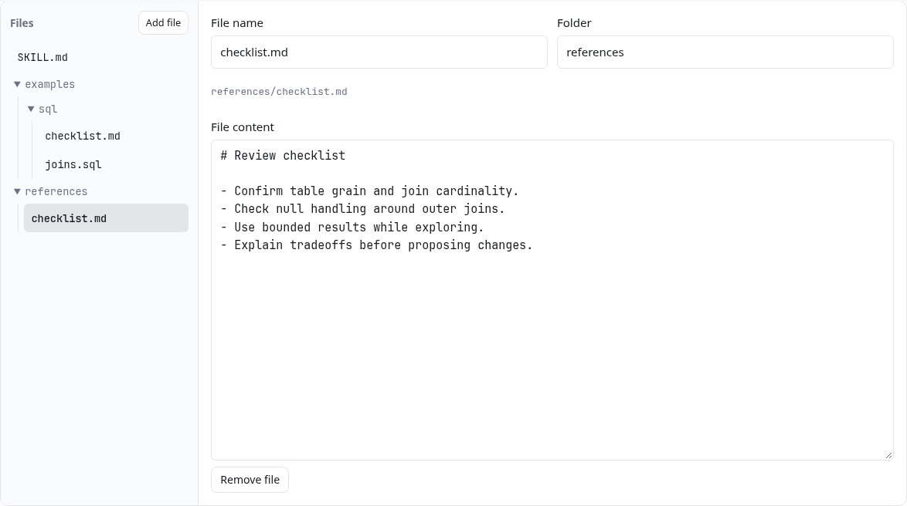
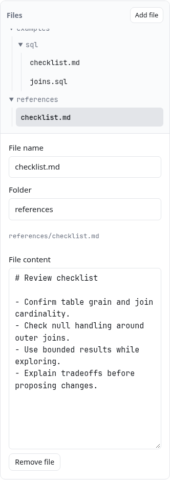
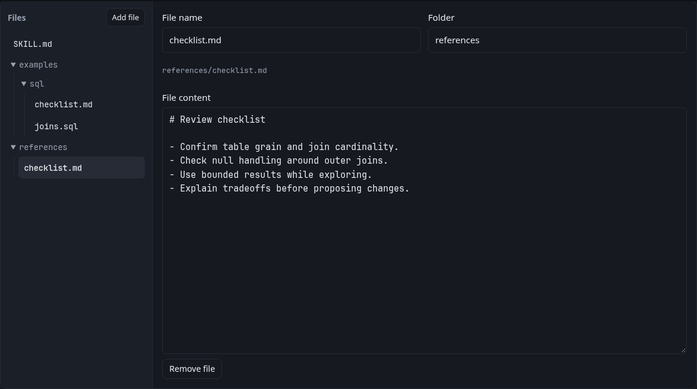
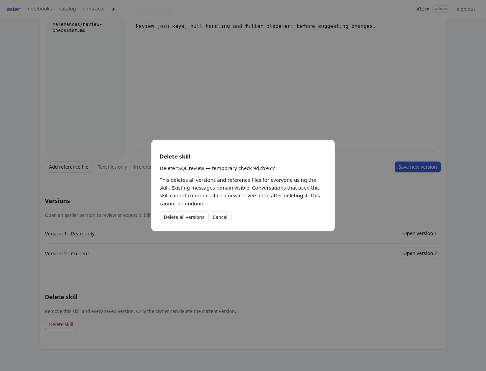
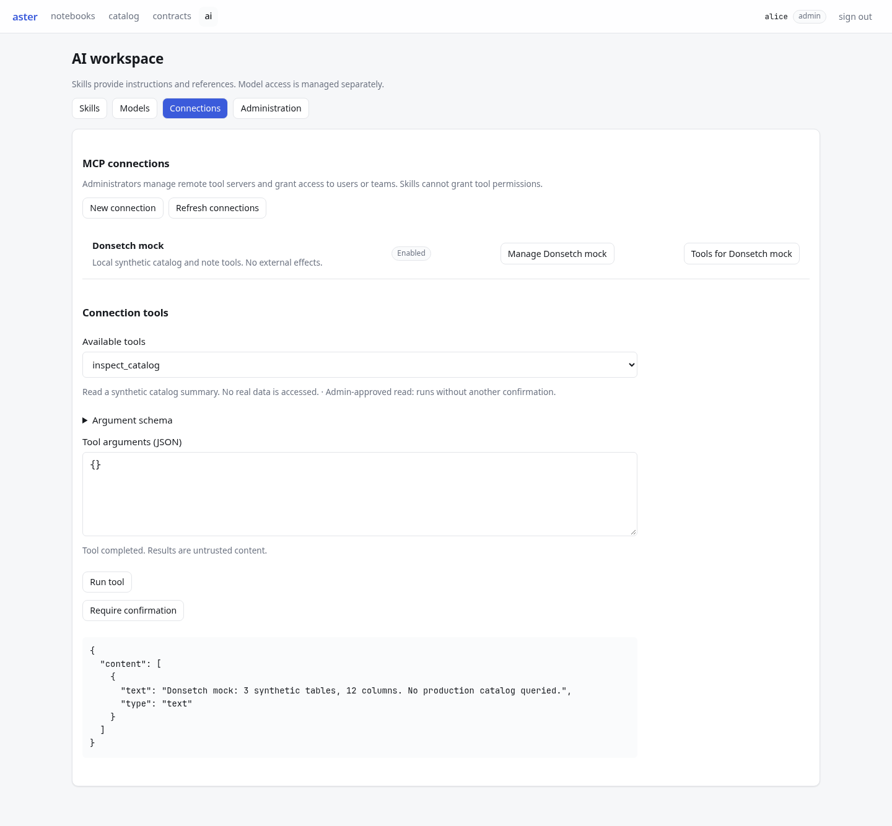
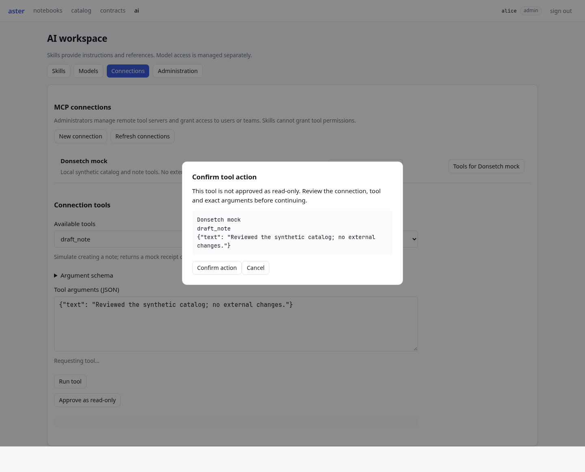

Local Podman deployment, November 8, 2026. Synthetic verification content only. Edit contains skill content, reference assets, version history, permissions and deletion. Donsetch runs through the Connections tool explorer.





